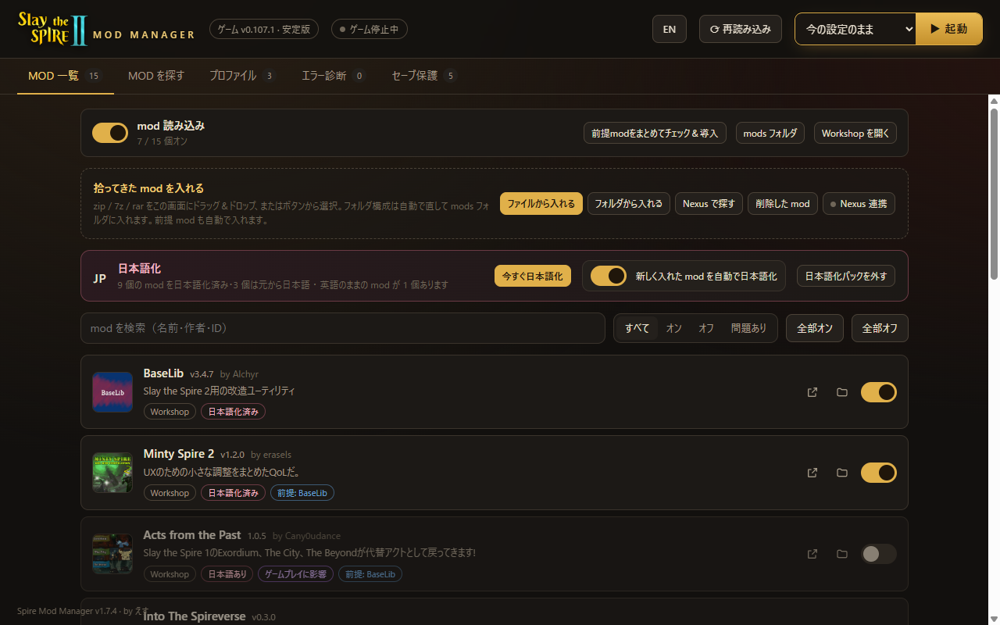
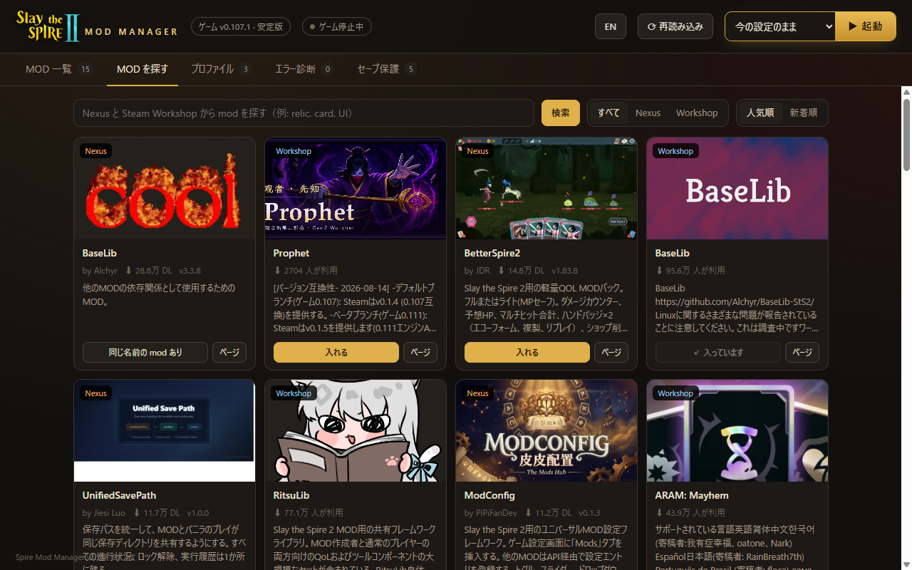
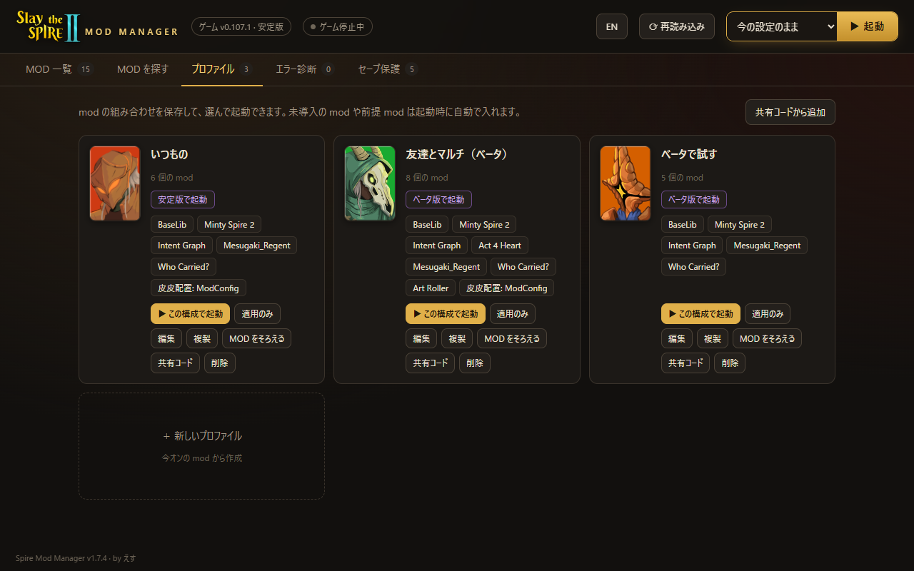
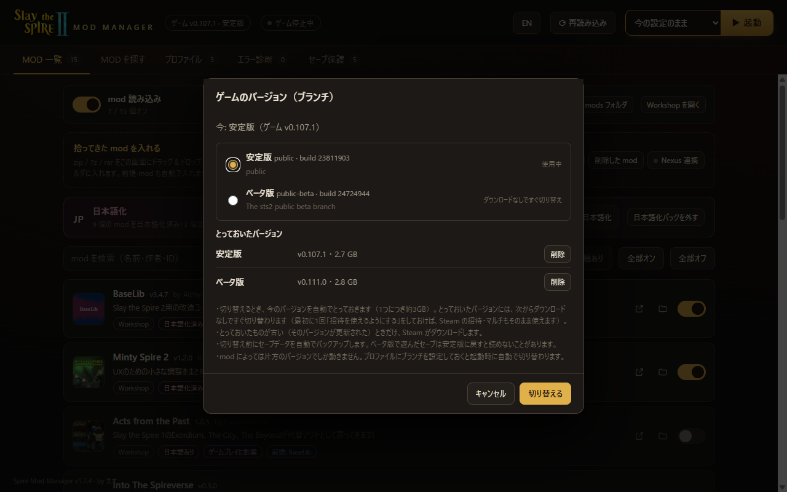
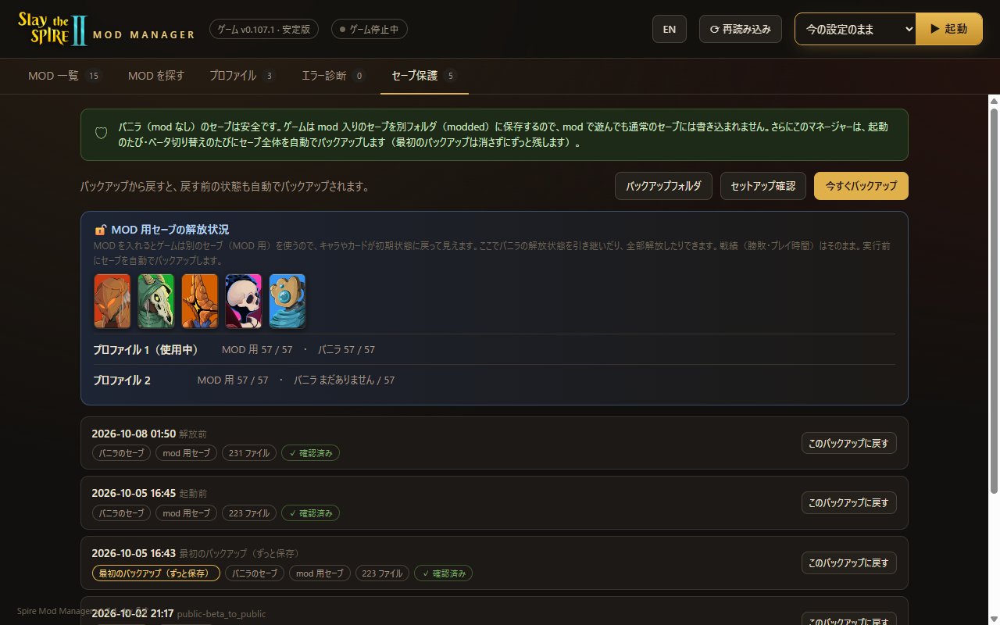

Workshop と Nexus Mods から 1 クリックで導入。前提 MOD は自動で入り、動かないときは原因と直し方を教えてくれます。無料です。
Install from Workshop and Nexus Mods in one click. Requirements install themselves, and when something breaks it tells you why and how to fix it. Free.
Windows 版をダウンロードDownload for Windows
MOD を入れて遊ぶときの「手間」と「なんで動かないの？」を片付けます。
All the busywork — and the "why won't it run?" — taken care of.
入っている MOD が一覧で見られます。足りない前提 MOD は Steam Workshop から自動で入れて、自動でオンにします。
See every mod you have. Missing requirements are pulled from Steam Workshop and switched on for you.
Steam Workshop と Nexus Mods をまとめて検索。説明文は日本語に訳して表示します。
Search Steam Workshop and Nexus Mods together, with descriptions translated into Japanese.

MOD の組み合わせをプロファイルに保存。共有コードを送れば、友達も同じ構成に 1 回でそろいます。
Save mod setups as profiles. Send a share code and your friends match your setup in one go.

一度とっておいたバージョンには一瞬で切り替え。Steam の招待もそのまま使えるので、どちらのバージョンでも友達とマルチできます。
Switch to a kept version in an instant. Steam invites keep working, so you can play multiplayer on either version.

起動のたびにセーブを丸ごとバックアップして、いつでも戻せます。MOD 用セーブでキャラが初期状態に戻っていても、ボタンで解放できます。
Every launch backs up all your saves, ready to restore. If the modded save shows characters locked again, unlock them with a button.

公式トレーラー
Official trailers
| Spire Mod Manager | Workshop だけ | Workshop only | 手で入れる | By hand | |
|---|---|---|---|---|---|
| 前提 MOD の自動導入 | Auto-install requirements | ○ | △ | × | |
| Nexus Mods から導入 | Install from Nexus Mods | ○ | × | △ | |
| エラーの原因と直し方 | Error causes and fixes | ○ | × | × | |
| MOD の組み合わせを保存・共有 | Save and share setups | ○ | × | × | |
| MOD の日本語化 | Japanese translation | ○ | × | × | |
| セーブの自動バックアップ | Automatic save backups | ○ | × | × | |
| 安定版 ⇔ ベータ版をダウンロードなしで | Stable ⇔ beta without downloading | ○ | × | × |
インストールはいりません。
No installation.
SpireModManager.exe を保存します。
Save SpireModManager.exe.
「WindowsによってPCが保護されました」と出たら「詳細情報」→「実行」。
If "Windows protected your PC" shows, click "More info" → "Run anyway".
ゲームは自動で見つかります。MOD を選んで「起動」。
It finds the game for you. Pick mods and press Launch.
大丈夫です。ゲームは MOD 入りのセーブを別の場所に保存します。さらに起動のたびにセーブ全体をバックアップしているので、いつでも戻せます。
Yes. The game keeps modded saves separately, and every launch backs up all saves so you can always go back.
個人が作った署名なしのソフトなので、止められることがあります。保存したフォルダを例外に追加してください。
Unsigned personal apps sometimes get flagged. Add the folder to your antivirus exceptions.
画面の「ゲームのフォルダを指定する」からフォルダを選んでください。それでもダメなときは「診断情報をコピー」して作者に送ってください。
Use "Choose the game folder". If that doesn't help, use "Copy diagnostic info" and send it to the author.
新しいバージョンが出ると画面の上に「更新する」が出ます。押すだけで入れ替わります。
When a new version is out, an "Update" button appears at the top. Press it and it replaces itself.
exe を消すだけです。設定とバックアップは %LOCALAPPDATA%\SpireModManager にあります。
Delete the exe. Settings and backups are in %LOCALAPPDATA%\SpireModManager.
無料です。1 分で使い始められます。
Free. Up and running in a minute.
Windows 版をダウンロードDownload for Windows